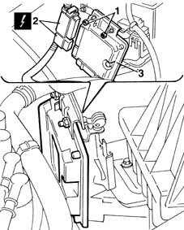

1056B82 injection/ignition system e.c.u. (one) - r + r
- Path
- Procedures > 10 ENGINE UNIT > 1056 PETROL INJECTION SYSTEM > 1056B multi-point injection system (mpi) > 1056B82 injection/ignition system e.c.u. (one) - r + r
- Kind
- repair procedure (removal / refitting; the operation number is the code)
- Applies to
- engines: 1.6 16v; all production periods
- Interactive page
- https://sloeber94.github.io/elrnDB-fMltpl/en/#/2891269
Applies to: engines: 1.6 16v; all production periods
 Removing
Removing
 Refitting
RefittingOpen the bonnet lid.
With the ignition key in the OFF position, disconnect the battery negative terminal.
1. Unscrew the nuts retaining the control unit to the mount.
2. Disconnect the electrical connections.
 | Name | Connector |
|---|---|---|
2 | Engine management ECU |
3. Remove the injection/ignition control unit by withdrawing from the mount.

Applies to: engines: 1.6 16v; all production periods
Refitting
RemovingFit the injection control unit and connect the electrical connections.
Tighten the fixing nuts to torque.
 | Fastening | Component | Ø | Value (daNm) |
|---|---|---|---|---|
- | Nut | INJECTION/IGNITION SYSTEM E.C.U. | M6 | 0.55 |
Connect the battery negative terminal.
Close the bonnet lid.